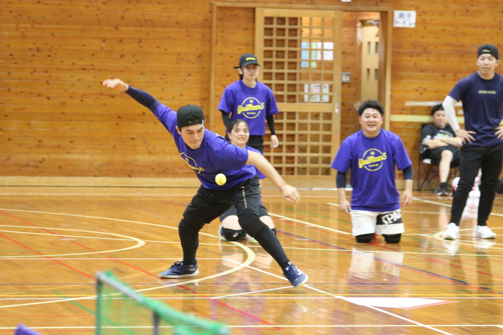

OUR TEAM
挑戦する。
つながる。
沖縄を、熱くする。
結マール５は、2024年に沖縄南部のメンバーを中心に発足したBASEBALL5チームです。
野球やソフトボールで培ってきた経験を、新しいフィールドへ。チームとして競技に挑みながら、地域の大会や子どもたちの体験会、学校での特別授業を通じて、このスポーツの楽しさを届けています。
目指すのは、競技の先に人と人のつながりが広がること。私たちの挑戦を、一緒に楽しんでもらえたらうれしいです。
公式サイトでチームを知る ↗